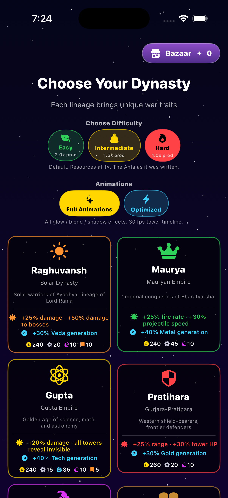
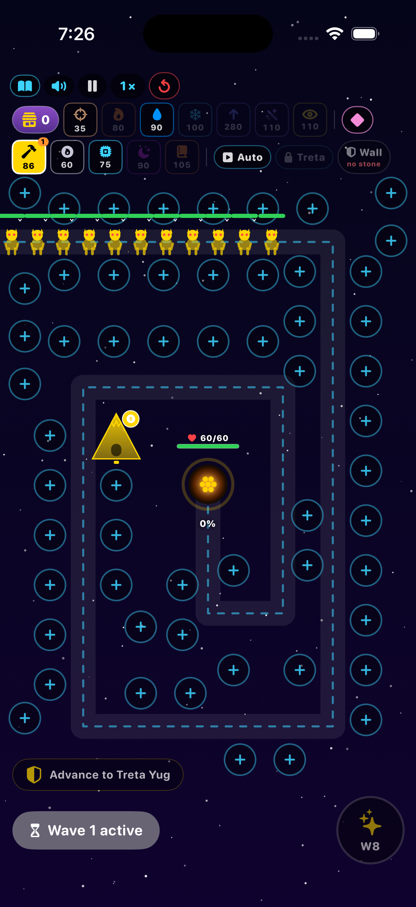
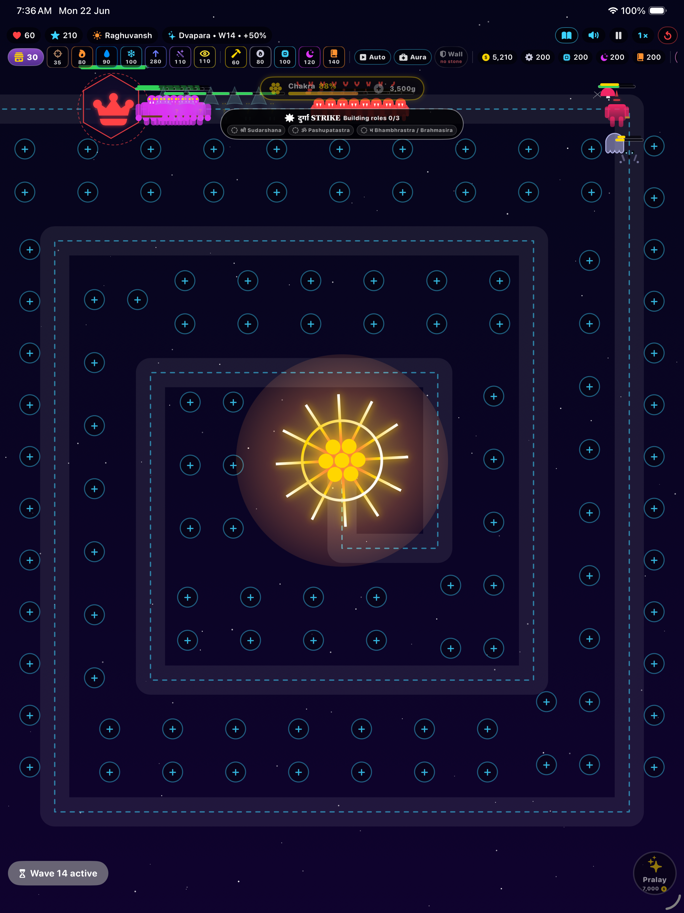

⚔ A tower defence inspired by Indian itihāsa
Three Yugas. Nine dynasties. Thirty divine weapons. One spinning Sudarshana Chakra between dharma and Kali's final age.
Anta Yuga is a tower-defence at heart but a dharma epic in scope. Every run is its own self-contained Mahabharata in miniature — pick a dynasty, pick a difficulty, march through three Yugas, and end Kali.
Raghuvansh, Maurya, Gupta, Pratihara, Rashtrakuta, Pal, Chola, Sen, Ahom — each with a unique combat or economy signature.
From the humble Dart Astra to apex T4 ultimates like Sudarshana, Brahmasira, Bhambhrastra and Pashupatastra.
Pishachas, Rakshasas and resource bearers march under bosses Mahishasura, Ravana, Indrajit, Vritra, Bhasmasura, Putana, Kali.
Socket Chuni, Panna, Nila and Raktamukhi into towers for timed amplification — and pay for the Wall emergency shield.
Gold, Metal, Tech, Jotisha, Veda — gathered by resource buildings during waves to feed mid-run upgrades.
Bazaar points spent on instant items, run-long buffs, and permanent unlocks that carry across runs.
Feed the central relic gold. At 100% charge the chakra ignites at the Kali wave and burns the dark age at 1,650 DPS.
A wish-tree that compounds every divine kill — late-game endgame production scales with the player's faith.
No analytics SDK. No ad SDK. No accounts. UserDefaults stays on your device. Your run is yours alone.
Every run traverses Satya, Treta and Dvapara. Each yuga unlocks heavier astras but bumps enemy power. Reach W14 and Kali Yuga arrives.
Waves 1 – 5
The age of truth. Build your first towers. Pishachas and Rakshasas swarm. Enemy power baseline.
Waves 6 – 10
Heal auras unlock. Mahishasura, Ravana and Indrajit begin to march. Enemy power +20%.
Waves 11 – 13
Shield auras unlock. Vritra, Bhasmasura and Putana lead the breach. Feed the Sudarshana. Enemy power +50%.
Wave 14 — the End
Kali arrives with 600,000 HP, 500 HP/s regen, and minion summons. Burn him with the Chakra before dharma falls.
Densely packed slot grids on iPhone, sweeping spirals on iPad and macOS. Every tower has its own visual identity — the chakra, the trident, the bow, the wish-tree.



Each lineage grants a permanent combat or economy bonus that shapes the whole run.
Drop towers onto the spiral path. Add stones for timed boosts. Build resource buildings to feed the next upgrade.
Feed the Sudarshan, advance the Yugas, hold dharma. At Wave 14 the chakra wakes — and the dark age burns.
Anta Yuga draws on the rich storytelling tradition of Indian itihāsa — the Ramayana, Mahabharata and Puranas. Names of deities, asuras, astras and ages are used with respect for the cultural and religious traditions from which they originate. Nothing in this game is intended to make light of any community's beliefs.
Free to download. Optional Bazaar points. No accounts. No tracking. Just thirty divine astras and one final showdown.